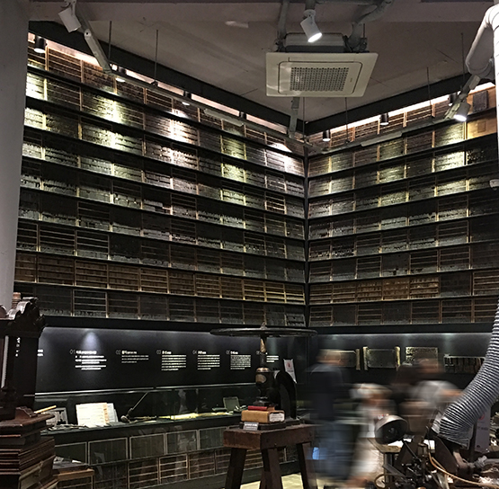

TOURIST in TOUR
프로그램 소개 / 여행 자료
-
이응노 미술관
Leeungno museum
고암 이응노 화백의 예술세계와 작품들을 감상할 수 있다. 대전에 위치한 이응노 미술관에서는 대전과 파리, 한국과 프랑스, 아시아와 유럽의 커뮤니케이션이 일어난다.

-
김유정문학촌
Leeungno museum
강원도 춘천시에서는 김유정이 우리나라 제일의 소설가인 것처럼 정성을 다해 김유정 문학촌을 꾸몄다. 기념관은 물론이고 소설의 마지막 장면을 실제크기 동상으로 재연하기도 했다. 우리를 감동시킨 많은 다른 문학가, 예술인들도 해당 지자체에서 성의를 다해 기렸으면 하는 바램이다.

-
책과 인쇄 박물관
museum
생각보다 작은 공간이지만 활자가 문명에 끼친 어마어마한 영향력이 초판본들에서 느껴진다. 박물만 볼 수 있는 것이 아니라 아직까지도 그 시절에 인쇄 과정을 손수 체험 할 수 있는 시간을 제공하고 있다.
 -
백사실 현통사
Leeungno museum
서울 종로구 부암동에서는 주택가에서 길 하나만 건너 들어가면 깨끗하고 맑은 계곡을 걸을 수 있다. 백사실 가는 길에 사찰도 있어주지만 더 들어가면 조선후기 별서 백석동천을 만날 수 있다.

-
통영국제음악당
Leeungno museum
작곡가 윤이상을 기리는 음악당으로 소리와 함께 수려한 경치도 즐길 수 있다. 봄과 가을에 통영국제음악제가 열리며 가을에는 윤이상국제음악콩쿠르가 열린다.

-
아침고요수목원
Leeungno museum
고암 이응노 화백의 예술세계와 작품들을 감상할 수 있다. 대전에 위치한 이응노 미술관에서는 대전과 파리, 한국과 프랑스, 아시아와 유럽의 커뮤니케이션이 일어난다.